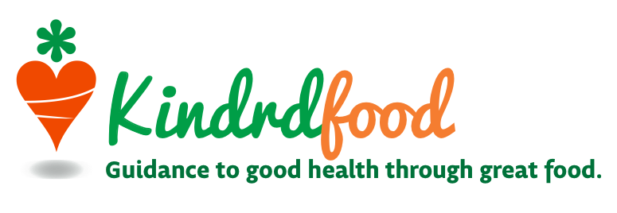
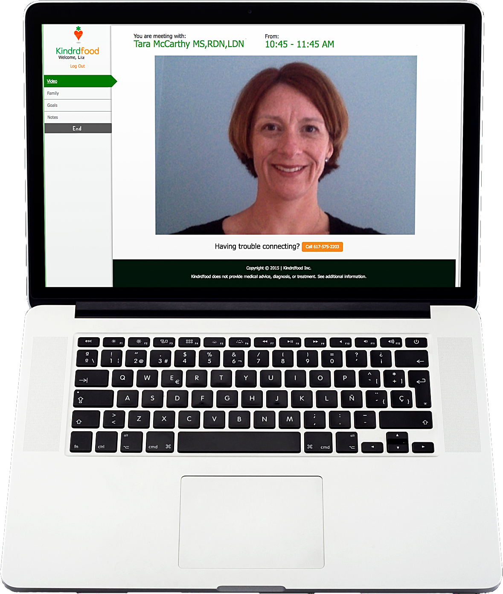
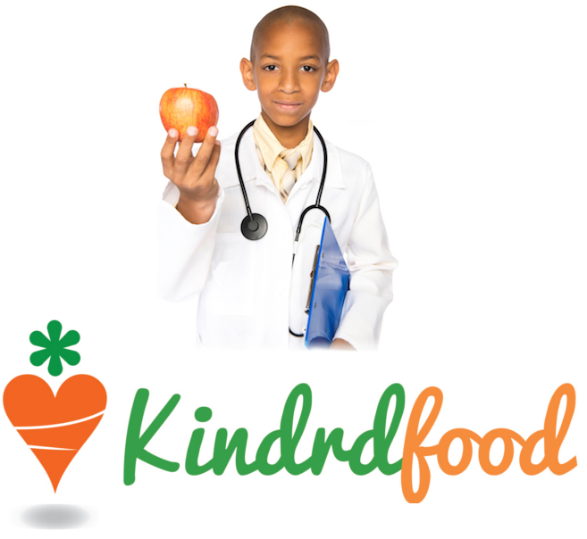
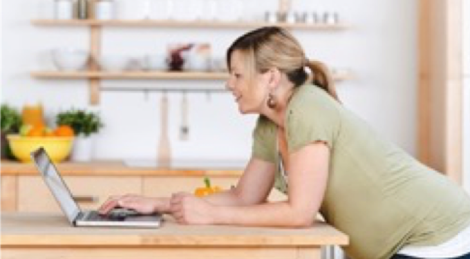

Portfolio · Brand & product design
Designing Kindrdfood
A clinical product that needed to feel like a friend, not a hospital. The design job was to make telehealth nutrition warm, plain, and trustworthy for families — while carrying real clinical weight underneath.

The mark
The logo does the positioning in one glance: a carrot drawn as a heart, topped with a green sprout. Food plus care, vegetable plus warmth. The wordmark splits the two brand colors — Kindrd in a friendly green script, food in carrot orange — over the tagline "Guidance to good health through great food."
The hand-script and the rounded heart-carrot keep it human; this is family care, not a clinic intake form.
Palette
Two brand colors carry everything: a warm carrot orange for action and energy, a fresh green for health and trust — on warm neutrals so the product never feels sterile.
Voice & principles
- Warm, plain, never alarmist. Families arrive worried about a child's health. Copy reassures and explains; it never uses fear to drive a booking.
- Clinical weight, friendly surface. Percentiles, z-scores, and allergen safety are serious — so the interface around them stays calm, rounded, and uncluttered.
- Guidance, not gatekeeping. The tagline is a promise: the product's role is to guide a family toward good food, with a real expert on the other end.
- One household, many people. The whole UX is built around a family unit, not a single patient — switching focus between members is a first-class action, not a workaround.
The product, screen by screen
The real shipped interface. The live video room is shown here; the remaining screens are marked for screenshots to be added.

The video room
The clinical moment. A clean in-browser room frames the dietitian, names the appointment and time, and keeps the chrome minimal so the conversation is the focus. The green Kindrdfood rail keeps the brand present without competing with the call.
Booking & the slot picker
Where the scheduling engine meets the family: pick a visit length, pick an open time, and the overlapping-slot logic quietly keeps the choices conflict-free. Designed to feel like picking a time, not solving a calendar puzzle.
Growth charts
Pediatric height and weight plotted against reference curves, with percentiles and z-scores explained in plain language a parent can actually read — clinical data made legible.
Recipes & the review queue
Recipes carry ingredient-level allergen tags and the patient groups they're safe for. The reviewing dietitian's queue makes the multi-stage sign-off a clear, trackable workflow — safety you can see.
The illustration family
A warm, friendly illustration set — carrots, chefs, kitchens, and families — keeps the clinical product approachable.


The through-line
One idea ties the brand, the voice, and the interface together: serious care can still feel warm. The carrot-heart says it, the plain copy says it, and the calm screens around the clinical engines say it. That's the whole design.